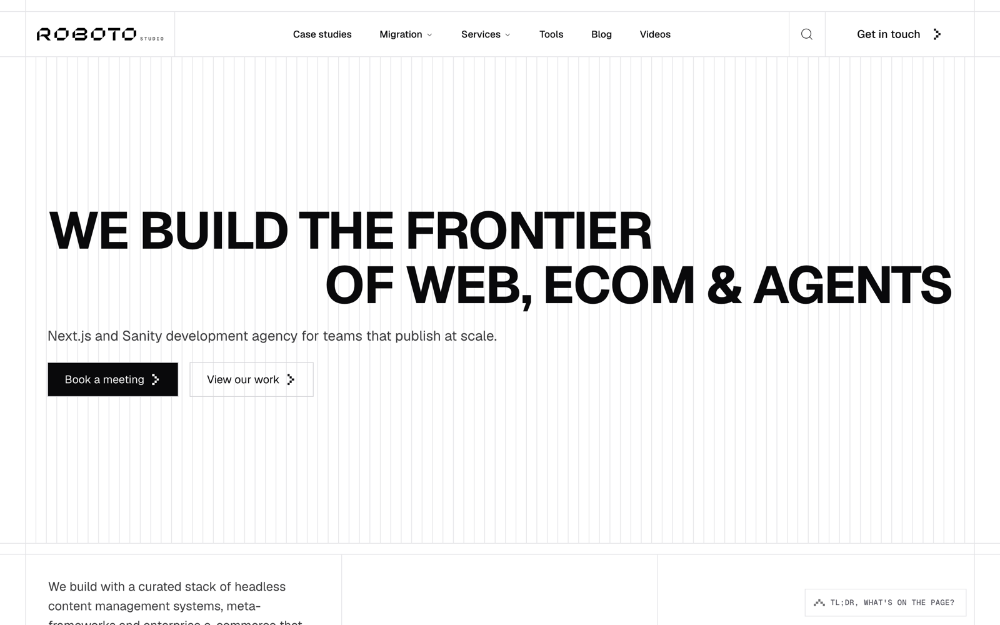

02Redirects in one migration
4,812
Every one mapped by hand before launch day.
Unless you map every URL first.
Every one mapped by hand before launch day.
Point every old URL at the homepage.
Map each old URL to its closest new page. One to one, 301.

// 4,812 of these { source: '/blog/:slug', destination: '/insights/:slug', permanent: true, }
Status codes
Canonicals
Sitemaps
Schema
“The best migration is the one nobody notices.”
What broke in your last migration?